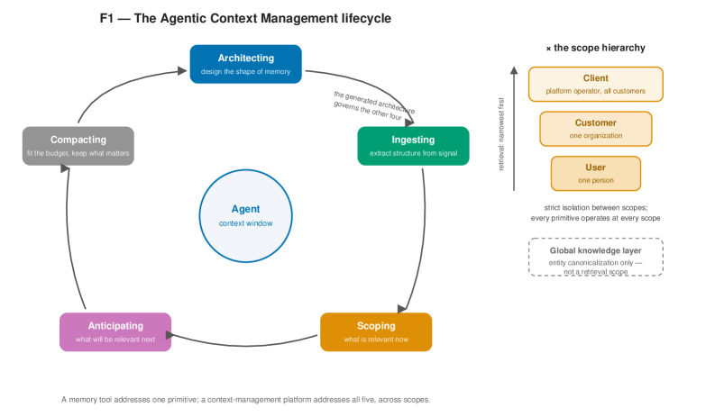
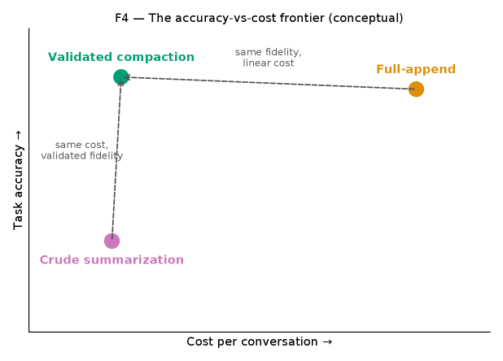

Agentic Context Management
Paper: "Agentic Context Management: Solving Agent Memory and Cost by Treating Them as Lifecycle and Architecture Problems" (arXiv 2607.21503 per the tweet; the tracker entry has no arXiv id — the abstract page confirms it). Single author: Gaurav Dadhich. 23 pages; evaluation harness and study data at github.com/maximem-ai. Note upfront: this is effectively a vendor systems paper — the reference implementation, Maximem Synap, is a commercial memory product.
TL;DR
- Reframes agent memory from "storage + retrieval" to a lifecycle problem with five primitives — architecting, ingesting, scoping, anticipating, and compacting-with-consolidation — arguing production agents fail from context mismanagement (stale messages, bloated tool outputs, prompt accretion), not reasoning deficits.
- The economic core: full-append context grows O(n²) in tokens over n turns; crude summarization is O(n) but hits an accuracy cliff (a documented case: 18,282→122-token compression drops task accuracy from 66.7% to 57.1%, below the no-context baseline); validated compaction — compression with an explicit fact-recoverability check and automatic retry at lower aggression — claims O(n) cost with preserved fidelity (80-96% token savings at 100-500 turns).
- The reference implementation (Maximem Synap) reports 92.0% on LongMemEval and 93.2% on LoCoMo categories 1-4 using a small answer/judge model, with multi-session reasoning the clear weak spot (75.2%).
Why this matters
If you work on long-horizon agents, context economics is the tax on everything: an agent that re-sends its history pays quadratically with conversation length, and an agent that summarizes carelessly silently loses the fact that mattered. Most published memory work optimizes recall benchmarks and ignores the operational questions — what should be captured at ingestion time, who is allowed to see it, when should retrieval happen relative to the agent's critical path, and how do you compress without discovering the loss three weeks later in production. The RLVR/agentic-RL connection is indirect but real: context policy determines the observation distribution your policy is trained and deployed on, and per-token cost bounds how many rollouts and how much history-conditioning you can afford in long-horizon training loops.
The gap this paper targets: existing framings treat memory as a retrieval subsystem bolted onto an agent. ACM's claim is that the failure modes live in the lifecycle — before retrieval (bad ingestion bounds retrieval quality: "user mentioned a plan" can never be retrieved as "upgraded from Starter to Pro on April 3"), around retrieval (scoping, prefetching), and after retrieval (unvalidated compaction). Whether or not Synap is the right implementation, the decomposition is a useful checklist for anyone building agent harnesses.
The core idea
Context is a lifecycle with five linked jobs, and compression is only safe if it is validated. The five primitives:
- Architecting — design a per-agent memory schema before storing anything: which categories of information matter, how they're extracted, where they persist, TTLs, and how they're retrieved and compacted. No universal template.
- Ingesting — transform raw signals (turns, documents, tool calls) into structured, retrievable memory at write time, including entity resolution ("Sarah" / "Sarah Chen" / "SC" → one canonical entity). Retrieval quality is bounded by ingestion quality.
- Scoping — attach visibility at write and read time across a hierarchy (user → customer org → platform client), with narrowest-first retrieval; prevents cross-user leakage while allowing organizational sharing.
- Anticipating — speculative prefetch of context the agent will likely need, moving retrieval latency off the critical path (reported ~60%+ hit rate, acknowledged as work in progress).
- Compacting & consolidation — when context exceeds budget, compress with an explicit validation score testing whether key facts remain recoverable from the compressed result; below-threshold compactions automatically retry less aggressively. Compaction fires at fixed intervals over bounded windows, keeping overhead linear.

Figure from the paper: the five-primitive lifecycle (architecting, ingesting, scoping, anticipating, compacting) drawn as a cycle around the agent's context window, with the retrieval scope hierarchy and the global knowledge layer feeding entity canonicalization.
The single sharpest idea is the last one: treat compaction like a lossy codec with a decode test, so "confident wrong answers from silently lossy summaries" become a detectable, retryable failure instead of a latent one.
How it works
Maximem Synap architecture (the reference implementation): an async-first SDK → API → managers → polyglot storage pipeline. Ingestion returns an ID immediately; background queue stages extract memory categories (facts, preferences, episodes, emotions, temporal events), resolve entities via a cascade (exact identifiers → lexical → semantic → contextual; public entities checked against a global knowledge layer, novel ones registered at customer scope), and persist across stores. Storage is polyglot: vector store (embeddings), graph store (entity-relations), relational store (source of truth), object store (originals), time-series (telemetry), in-memory (caches/queues), with per-tenant namespacing.
Retrieval combines three signals — vector similarity, keyword matching, and graph traversal — with a low-latency mode and a higher-accuracy mode that adds query decomposition and LLM reranking. Graph-aware multi-hop traversal guided by vector similarity targets the "bridge document" problem pure embedding search misses.
Integration pattern per agent turn: (1) scope-aware retrieval of past context, (2) validate/compact the current conversation, (3) call the LLM with the assembled context, (4) asynchronously ingest the new turn.
# ACM per-turn integration (paper Listing 1) + validated compaction
on user_message:
retrieved <- FETCH(query=user_message, scope={user, customer}) # narrowest first
compacted <- COMPACT(current_conversation) # validated, below
reply <- MODEL(assemble(retrieved, compacted, recent_turns))
INGEST(turn, scope) # async: returns ID immediately; background stages
# extract categories, resolve entities, persist
COMPACT(window): # fires every p turns over a bounded window
repeat:
summary <- compress(window, aggressiveness)
score <- validate(summary, window) # are key facts recoverable?
if score >= threshold:
return summary (+ validation score, compression ratio)
aggressiveness <- lower # automatic retry
The cost model. Full-append: turn k costs k·t tokens, total t·n(n+1)/2 ≈ O(n²) — at t=500 and a 4K budget, that's a 6.3x cost multiplier at 100 turns, 12.6x at 200, 31.3x at 500. Validated compaction firing every p turns at c times bounded-context cost gives total N·W·(1+c/p); at p=8, c=2 the claimed savings are 80% at 100 turns, 90% at 200, 96% at 500.
In the paper's notation (Sections 3.1, 3.3, 5):
where \(t\) is tokens added per turn, \(n\) the number of turns, and \(W\) the bounded per-turn context budget.
the cost multiplier of full-append over bounded context — the source of the 6.3x/12.6x/31.3x figures above.
total cost with validated compaction: \(N\) turns at budget \(W\), plus a compaction pass every \(p\) turns costing \(c\) times a bounded turn — still linear in \(N\).
the lifecycle's bounding chain: no amount of retrieval or reasoning can recover what ingestion never extracted.

Figure from the paper: the accuracy-vs-cost frontier — full-append (high accuracy, quadratic cost), crude summarization (linear cost, accuracy cliff), and validated compaction claiming same fidelity at linear cost.
Results
All numbers are the paper's own, on its own harness, with a small answer/judge model (reported as gpt-4-mini, binary CORRECT/WRONG judging); no controlled head-to-head against other memory systems is run.
- LongMemEval (500 questions): 92.0% overall. Per category: single-session-user 100%, single-session-preference 100%, knowledge-update 100%, temporal-reasoning 100%, single-session-assistant 87.5%, multi-session 75.2% — the weak spot the tweet also flags.
- LoCoMo (categories 1-4, excluding the adversarial category 5): 93.2% overall — multi-hop 97.3%, open-domain 93.4%, temporal 90.8%, single-hop 88.8%.
- Comparative context, offered cautiously by the author: SuperMemory reports 81.6-85.2% on LongMemEval depending on answer model; the paper argues its result with a smaller answer model suggests the gains come from the context layer. No same-harness comparison is provided.
- The accuracy-cliff datapoint: crude summarization compressing 18,282 → 122 tokens dropped task accuracy 66.7% → 57.1%, below no-context — the paper's motivating exhibit for validation.
- Deliberately not reported: production latency, per-task token cost, and context-rot resistance — the author states these need a separate benchmark, promised as future work. The prefetch hit rate (~60%+) is the only anticipation number given.
How it connects
Within this reading list, ACM is the systems-engineering pole of the memory-context thread, and PRO-LONG is its direct foil: PRO-LONG says never compress — keep a lossless log and let a coding agent search it; ACM says compaction is inevitable and must be validated. The regimes differ (bounded single tasks vs. persistent multi-tenant assistants with cross-session state and cost SLOs), and the honest synthesis is that ACM's validation idea and PRO-LONG's lossless-substrate idea are complementary rather than competing. Continual Learning Bench is the standing threat to everything in ACM's category: if naive ICL beats purpose-built memory systems on learning-relevant tasks, an architecture this elaborate must prove it isn't overhead — and ACM's own multi-session number (75.2%) lands exactly where CL-Bench predicts memory systems struggle. The Always-On Agents survey generalizes ACM's lifecycle framing to durable state beyond memory (permissions, commitments, provenance, rollback) and is the better conceptual map; ACM is one implementation slice of it. MemPalace, Memvid, and Memoria are alternative storage/retrieval designs occupying the same product niche; PageIndex shares the skepticism of pure vector retrieval (ACM triangulates vector+keyword+graph; PageIndex replaces vectors with hierarchical navigation). At the architecture layer, Still and End-to-End Context Compression (LCLMs) do compression inside the model (KV cache, soft tokens) — worth watching as substitutes for harness-level compaction. Against well-known prior work: the lineage runs through MemGPT (OS-style context paging), generative-agents memory streams (reflection/consolidation), and the LongMemEval/LoCoMo benchmark line the paper evaluates on.
Critical take
- Vendor paper, single author, self-run evaluation. Maximem Synap is the author's product; the benchmarks are run on the author's own harness with an LLM judge, and there is no controlled comparison against Mem0, Zep, Letta, SuperMemory, or a plain long-context/RAG baseline under identical answer models. The 92%/93.2% figures are plausible but unverifiable as reported; the SuperMemory comparison in the paper is explicitly cross-methodology. Treat the numbers as a floor for skepticism, not a leaderboard entry.
- The benchmarks measure the easy half of the claim. LongMemEval/LoCoMo test conversational recall; ACM's actual pitch is economics and lifecycle robustness — latency, cost per task, context rot — precisely the dimensions the paper defers to an unpublished future benchmark. The O(n²)→O(n) analysis is arithmetic, not measurement: the 80-96% savings figures come from a cost model with assumed parameters (p=8, c=2), not from production traces.
- Validation is only as good as the validator. Compaction validation means checking fact recoverability with a model — which can be wrong in correlated ways with the compressor, especially on exactly the multi-session synthesis cases where the system is weakest. The paper's own retrieval study concedes single-gold-target scoring, no chunking, 10K-document corpora, and a single configuration.
- The five primitives are a taxonomy, not a theory. They are a genuinely useful engineering checklist, but nothing predicts when each primitive pays for itself; and PRO-LONG plus CL-Bench (in this list) demonstrate regimes where most of the pipeline is dominated by "store everything, search with tools." The right reading: architecting/scoping/validated-compaction are the durable ideas; the specific polyglot six-store stack is one vendor's answer.
- Open questions: does validated compaction survive adversarial or long-tail fact distributions where the validator's recoverability probes don't cover what later turns out to matter? What's the actual latency/cost of the three-call-per-turn integration pattern at scale? And can anticipation ever be reliable enough (60% hit rate today) to matter versus simply making retrieval fast?
If you remember three things
- Context economics in one line: full-append is O(n²) tokens, crude summarization is O(n) with an accuracy cliff (66.7%→57.1% in the paper's example), and the claimed frontier is O(n) validated compaction — compression with a decode test and automatic retry.
- The five-primitive lifecycle (architect, ingest, scope, anticipate, compact+consolidate) is a solid checklist for agent-harness design even if you ignore the vendor implementation — especially "retrieval quality is bounded by ingestion quality" and scoped, narrowest-first access.
- Reported results (92.0% LongMemEval, 93.2% LoCoMo cats 1-4) are self-evaluated with no same-harness baselines, and multi-session reasoning (75.2%) remains the unsolved category — consistent with this reading list's broader evidence (CL-Bench, PRO-LONG) that cross-session synthesis, not storage, is where memory systems actually fail.